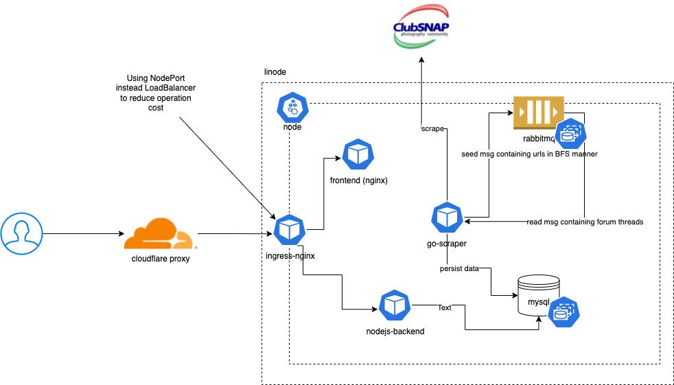

Building my secondhand camera equipment pricing webapp
When I was dabbling with photography a few years back, secondhand camera equipment forum ClubSNAP was where I frequented for my equipment needs. Buying a brand new equipment was simply too expensive for a hobbyist like me.
Finding sellers was the easy part; the difficult part was figuring how much to pay for it. What did I do? Manually scanned all the posts to figure out the “standard” price range of an equipment.
It was tedious and I thought to myself how great it would be if I can see the price history over time at a glance.
I decided to build it myself.
After spending 1.5 months working on it after work, it’s finally up!
 SG secondhand camera equipment pricing
SG secondhand camera equipment pricing
Planning
Before building this, I asked myself what did I want to get out of it:
- learn Golang
- deliver a MVP that can showcase the feasibility of this idea
- fully manage the infrastructure while keeping costs as low as possible. ideally the infrastructure can be easily reused for future projects
Feature
To be able to deliver value as quickly as possible, I narrowed down the available features based on this statement:
As a user, I want to be able to search for the price history of a particular camera equipment belonging to a particular brand over a specific period of time, with the ability to dynamically zoom in on the data without performing additional queries. I also want to be able to perform more than 1 search at once to compare the results.
Design
As mentioned above, one the goals was to learn Golang. I have read quite a bit of code written in Golang as I have to operate EKS clusters running observability related services (Prometheus stack) at work and when you encounter some behaviour that isn’t well documented, the best way to find the answer is to read the source code, most of which are written in Golang. However I have never written much Golang before so I thought this might be a good chance to get my hands dirty and learn the intricacies of it.
I decided to adopt the microservices approach and split the logic into 3 different services:
- Frontend written using React (JavaScript). This is then packaged into static files and served by
nginx. - Backend API written using Nodejs (TypeScript)
- Worker performing periodic scraping written in Golang. I found a pretty decent Golang package (Colly)meant for web scraping purpose
Reasons for doing so: ability to scale and make changes to services without affecting the other services. This is especially true for the scraper worker instance, which is designed to operate only with 1 instance running at all times to reduce the amount of load on the scraped website as much as possible. Redundancy is not necessary since it is not user facing and even in failure cases, data can eventually be recovered.
Using Kubernetes
Some of you might be thinking “Kubernetes for such a simple webapp?!”.
Kubernetes (or rather containers + orchestrators in general) is amazing and has changed the way we design our systems and manage workloads. One of the main draw to me is the ability to deploy any workload in the form of containers and not worry about messing up the dependencies of each application.
It also allows us to pack more within the same VMs, which is what I am looking for as I intend to use this setup for my future projects. Future application deployments can be as simple as: purchasing new domain (if necessary), containerizing the new application, write a helm chart to create an necessary resources, deploy! Or put it simply, there’s not much more tweaking left on the infrastructure.
Of course, nothing is free. With the features come complexity. To me, that’s a fair tradeoff and if anything, it’s a great opportunity to learn should I ever encounter any issue.
Cloud provider
This took me awhile to decide due to the number of choices available (AWS, GCP, Azure, Digital Ocean, Linode, Heroku etc). Operating cost and ease of operating are what I based my decision on.
In terms of familiarity, AWS comes out top as I have been using their services almost daily for both my current and previous roles. The problem is the complexity and operating cost. Like Kubernetes, it has many knobs, perhaps a little too many for a small project like mine. Also, the operating cost is much higher with the lingering fear that I might have accidentally toggled some costly feature.
I ended up with either Linode or Digital Ocean. Both are rather similar in pricing and both provide managed Kubernetes control plane. However, Digital Ocean do provide managed databases though unlike Linode.
Eventually I chose Linode because they happen to have a $100 voucher for new joiners and I figured I can use this opportunity to learn how to operate a database (deployment, backups, upgrades) instead using StatefulSets.
Challenges faced
Writing scraper in Golang
As someone who spent most of his time working with JavaScript, working with Golang was a rather refreshing change. It got me thinking about code differently, especially when it comes to error handling, Golang’s design and convention encourages explicit checking of error where they occur. No more try {} catch {} & throw to serve my error handling needs.
I also came to appreciate how simple setting up a Golang project is, especially with the “batteries included” philosophy. At least for my use case.
In JavaScript, there are so many ways to do a certain task (e.g writing tests and linting) that more time was fighting decision fatigue than working on the application itself.
However for the scraping logic implementation, I did have to use a third party package colly, and the experience was a little more painful than I expected it to be. Perhaps it’s the lack of clear documentation on how various pieces of the package work. To be fair, the repository did come with examples but I still had to spend quite a bit of time figuring out how exactly can I use it to scrape a piece of data.
Then there’s the console logging part.
In JavaScript, when you log something to the console, you can pretty much see the entire data structure of whatever you are logging and be able to drill down into any of the fields present. When it comes to web scraping that involves traversing the DOM, it helps greatly to be able to visualize where I am at.
{
foo: {
bar: {
baz: 123
}
}
}
Using Golang and the colly package, what I got was something like this:
&Node{0x0231231}&prev{0x0231231}...
Perhaps I was logging in the wrong format?
(somewhat) Securing the backend API
I don’t think the data I have is of any value but it got me thinking about what are the available options to prevent misuse of the API. Most of the recommended approaches involve some sort of user authentication which I do not want to implement as I wanted to make it easy for people to access and use it.
In the end, I went for the “security through obscurity” approach by obfuscating the frontend JavaScript code and added debug protection to deter most users from trying to reverse engineering the token generation logic.
Is it entirely secure? Of course not! This is just an experimentation.
What I am doing is just making the reverse engineering process as painful as possible for most people, such that the cost of reverse engineering it outweighs the benefit of it.
I am not a reverse engineer myself but I believe any RE worth their salt can easily figure it out, to which congratulations, you now have free access to the backend API.
Further improvements
I see the current version as a MVP that can do with some improvements:
- making it mobile friendly. how can the UI, in particular the graph, be more pleasantly displayed for mobile users?
- storing of queries when user returns so that they do not have to perform the same query again